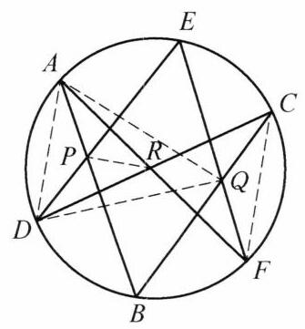

19 例 2：帕斯卡定理（圆内接六边形对边交点共线）
19.1 题目
(帕斯卡定理)圆内接六边形的三组对边的交点共线.
19.2 参考解答
如图 3-1,设圆内接六边形为 {ABCDEF} ,直线 {AB} 与 {DE} 交于点 P ,直线 {BC} 与 {EF} 交于点 Q ,直线 {CD} 与 {FA} 交于点 R . 因为 \angle {DCB} = \angle {DAB},\angle {BCF} = \; \angle {BAF},\angle {FRP} = {180}^{ \circ } - \angle {ARP},\angle {PRC} = {180}^{ \circ } - \; \angle {PRD},\angle {CFE} = \angle {RDE},\angle {EFR} = \angle {EDA} ,所以
\frac{\sin \angle {DCB}}{\sin \angle {BCF}} \cdot \frac{\sin \angle {FRP}}{\sin \angle {PRC}} \cdot \frac{\sin \angle {CFE}}{\sin \angle {EFA}} =
\frac{\sin \angle {DAB}}{\sin \angle {BAF}} \cdot \frac{\sin \angle {ARP}}{\sin \angle {PRD}} \cdot \frac{\sin \angle {RDE}}{\sin \angle {EDA}}.

图 3-1
对 \triangle {ADR} 和点 P ,用第一角元形式的塞瓦定理,得
\frac{\sin \angle {DAB}}{\sin \angle {BAF}} \cdot \frac{\sin \angle {ARP}}{\sin \angle {PRD}} \cdot \frac{\sin \angle {RDE}}{\sin \angle {EDA}} = 1,
故
\frac{\sin \angle {DCB}}{\sin \angle {BCF}} \cdot \frac{\sin \angle {FRP}}{\sin \angle {PRC}} \cdot \frac{\sin \angle {CFE}}{\sin \angle {EFA}} = 1.
注意到 {BC} 与 {FE} 交于点 Q ,故由第一角元形式的塞瓦定理得 {BC},{FE},{RP} 三线共点于 Q ,即 P, Q, R 三点共线.
注:类似的结论, 对于椭圆、双曲线、抛物线也同样成立, 即我们有如下结论:
如果一个六边形内接于一条二次曲线 (椭圆、双曲线、抛物线), 那么它的三对对边的交点在同一条直线上.
19.3 解题思路与分析
这段证明之所以读起来让人觉得“费解”、甚至有些莫名其妙，主要有两个原因：
- 书写顺序完全是“倒果为因”的综合法：它一上来先抛出了 6 个角度相等（或互补）的式子，在读者完全不知道为什么要关注这些角的时候，强行拼凑出一组复杂的正弦乘积相等；
- 配图（图 3-1）存在严重的视觉误导：图 3-1 中画出了两条虚线 AQ 和 DQ，但整篇证明根本没有用到 AQ 和 DQ！相反，证明真正需要用到的核心连线 RQ，图上反而没画出来。如果你一边看图一边读证明，视线很容易被 AQ, DQ 带偏。
如果我们把那两条多余的虚线 AQ, DQ 擦掉，用“执果索因（逆向分析）”和“高等几何背景（线束与对偶）”两个维度来拆解，你会发现这个证法其实非常自然、对称。
19.4 一、 逆向复盘：这个证明是怎么“倒推”出来的？
假设你现在要独立发明这个证明，你的思考路径应该是这样的四步：
19.4.1 第一步：把“三点共线”转化为“三线共点”
我们要证 P, Q, R 三点共线。 已知 Q 是直线 BC 与 FE 的交点。那么，“P, Q, R 三点共线”就等价于说：直线 RP 也经过点 Q，即 BC, FE, RP 三线共点（于点 Q）。
一旦问题变成“证明三线共点”，最顺手的工具自然就是塞瓦定理（特别是角元塞瓦定理）。
19.4.2 第二步：为这三条线寻找“宿主三角形” \triangle CFR
要用角元塞瓦定理证明 BC, FE, RP 三线共点，必须先找到一个三角形，使得这三条线恰好是从它的三个顶点发出的塞瓦线（Cevian）： * 第一条线是 CB（过点 C）； * 第二条线是 FE（过点 F）； * 第三条线是 RP（过点 R）。
天然地，这个宿主三角形就是 \triangle CFR（图 3-1 右侧由实线 CR, FR 和虚线 CF 围成的三角形）！ 而且更妙的是，点 R 本身就是 CD 与 FA 的交点，这意味着 \triangle CFR 的两条边 RC 和 RF 本来就是现成的六边形边所在直线（即直线 CD 和直线 FA）！
于是，在 \triangle CFR 中，要证 CB, FE, RP 共点于 Q，只需证角元塞瓦等式： \underbrace{\frac{\sin \angle DCB}{\sin \angle BCF}}_{\text{顶点 } C\text{ 处}} \cdot \underbrace{\frac{\sin \angle FRP}{\sin \angle PRC}}_{\text{顶点 } R\text{ 处}} \cdot \underbrace{\frac{\sin \angle CFE}{\sin \angle EFA}}_{\text{顶点 } F\text{ 处}} = 1
19.4.3 第三步：顺着“八字形”找到孪生三角形 \triangle ADR
怎么证上面这个乘积等于 1 呢？硬算肯定不行，最聪明的方法是找另一个已经三线共点的三角形，把正弦比“搬运”过去。
观察图 3-1，直线 CD 和 FA 相交于 R，形成了一个经典的“八字形（沙漏形）”：右边连虚线 CF 得到 \triangle CFR，左边连虚线 AD 就得到它的孪生三角形 \triangle ADR！
而在左边的 \triangle ADR 中，天然就有一组已经共点的三条线——因为点 P 是 AB 和 DE 的交点，所以从 \triangle ADR 三个顶点发出的三条线 AB、RP、DE 天然共点于 P！
对 \triangle ADR 和共点 P 直接写出角元塞瓦定理，天然就有： \underbrace{\frac{\sin \angle DAB}{\sin \angle BAF}}_{\text{顶点 } A\text{ 处}} \cdot \underbrace{\sin \angle ARP \over \sin \angle PRD}_{\text{顶点 } R\text{ 处}} \cdot \underbrace{\frac{\sin \angle RDE}{\sin \angle EDA}}_{\text{顶点 } D\text{ 处}} = 1
19.4.4 第四步：利用圆周角完成“一键替换”
把这两个孪生三角形放在一起对比，你会发现它们的每一项都通过同弧所对的圆周角（以及顶点 R 处的邻补角）完美地一一对应：
| 对应位置 | 目标三角形 \triangle CFR（待证共点于 Q） | 已知三角形 \triangle ADR（已知共点于 P） | 相等的几何原因（见图 3-1） |
|---|---|---|---|
| 第一组顶点 (C \leftrightarrow A) | 塞瓦线 CB 分 \angle DCF 为： \angle DCB 与 \angle BCF |
塞瓦线 AB 分 \angle DAF 为： \angle DAB 与 \angle BAF |
同对 \overset{\frown}{DB} \implies \angle DCB = \angle DAB 同对 \overset{\frown}{BF} \implies \angle BCF = \angle BAF |
| 第二组顶点 (F \leftrightarrow D) | 塞瓦线 FE 分 \angle CFA 为： \angle CFE 与 \angle EFA |
塞瓦线 DE 分 \angle CDA 为： \angle RDE 与 \angle EDA |
同对 \overset{\frown}{CE} \implies \angle CFE = \angle CDE = \angle RDE 同对 \overset{\frown}{EA} \implies \angle EFA = \angle EDA |
| 公共顶点 (R \leftrightarrow R) | 塞瓦线 RP 分 \angle FRC 为： \angle FRP 与 \angle PRC |
塞瓦线 RP 分 \angle ARD 为： \angle ARP 与 \angle PRD |
A,R,F 共线 \implies \angle FRP = 180^\circ - \angle ARP D,R,C 共线 \implies \angle PRC = 180^\circ - \angle PRD |
看懂了这个表格，你就明白教材开头那串令人头晕的角相等是怎么来的了——作者只是在草稿纸上写出了上面两个角元塞瓦式，比对了一下对应项，然后把“比对结果”放在了证明的第一句话而已。
19.5 二、 降维视角：为什么偏偏能这么巧合地配对？
如果你进一步追问：“为什么在 \triangle CFR 和 \triangle ADR 中，塞瓦线分出来的六个角恰好能两两配成同弧圆周角？而且为什么书后紧接着加了一个关于二次曲线的‘注’？”
这其实触及到了帕斯卡定理最本质的射影几何背景——线束（Pencil of lines）与交比（Cross-ratio）。这个角元塞瓦证法，本质上是将射影几何中的“二次曲线线束交比证法”直接翻译成了初等三角语言。
我们可以把六边形的六个顶点按奇偶分成两组：\{A, C, E\} 和 \{B, D, F\}。 1. 顶点 A 和 C 处的线束同构： * 在 \triangle ADR 的顶点 A 处，形成角度的三条射线是 AD, AB, AF —— 它们正是从点 A 向圆上另外三点 \{D, B, F\} 发出的线束 A(D, B, F)； * 在 \triangle CFR 的顶点 C 处，形成角度的三条射线是 CD, CB, CF —— 它们正是从点 C 向同一组点 \{D, B, F\} 发出的线束 C(D, B, F)！ * 在圆中，从圆周上任意两点（A 和 C）向圆上另外三点（D, B, F）引射线，对应的夹角必然相等，因此 \frac{\sin \angle DAB}{\sin \angle BAF} = \frac{\sin \angle DCB}{\sin \angle BCF} 是必然成立的。 2. 顶点 D 和 F 处的线束同构： * 同理，从点 D 发出的三条射线 DC, DE, DA 是向 \{C, E, A\} 发出的线束 D(C, E, A)； * 从点 F 发出的三条射线 FC, FE, FA 也是向同一组点 \{C, E, A\} 发出的线束 F(C, E, A)！ * 因此它们夹角的正弦比 \frac{\sin \angle RDE}{\sin \angle EDA} 与 \frac{\sin \angle CFE}{\sin \angle EFA} 也必然相等。 3. 与二次曲线（注）的联系： * 当把圆推广到一般的椭圆、双曲线、抛物线时，同弧所对的圆周角不再直接相等，单个三线束的正弦比不再相等；但只要引入第四条射线构成四线束交比（由角元正弦之比复合而成），根据沙尔定理（Chasles’ Theorem），二次曲线上动点向四定点张成的线束交比恒定不变： A(D, B, E, F) = C(D, B, E, F) * 教材的这个证法，正是利用了两条基准边 CD 和 AF 的交点 R 作为“桥梁”（公共塞瓦线 RP 消去了第四条射线的自由度），把四线束交比拆成了两个八字形三角形 \triangle ADR 与 \triangle CFR 的角元塞瓦定理。
所以，记住“对顶八字形（\triangle ADR 与 \triangle CFR）+ 奇偶顶点线束配对”这个骨架，这个证明就完全不需要死记硬背了。
19.6 分步证明
19.6.1 步骤 0：圆内接六边形 ABCDEF 构型
已知六边形 ABCDEF 内接于圆 ⊙O。
帕斯卡定理（Pascal’s Theorem）是射影几何与欧几里得几何中最著名的经典定理之一：
圆内接六边形的三对对边所在直线的交点必在同一直线上。
我们首先建立六边形的基础构型，观察六个顶点在圆周上的几何分布。
19.6.2 步骤 1：对边延长相交得交点 P, Q, R
分别延长六边形的三对对边，得到三对交点：
• 直线 AB 与 DE 交于点 P；
• 直线 CD 与 FA 交于点 R；
• 直线 BC 与 EF 交于点 Q。
本证明的核心目标：证明这三个交点 P, Q, R 三点共线。
19.6.3 步骤 2：聚焦 △ADR 与圆周角等量代换
将视点转换至由边交织而成的关键三角形 △ADR，利用同弧圆周角相等与平角补角性质建立角量对应：
• 弦 DB 所对圆周角：∠DCB = ∠DAB
• 弦 BF 所对圆周角：∠BCF = ∠BAF
• 点 R 处平角补角关系（互补角正弦值相等）：
∠FRP = 180° − ∠ARP ⟹ sin∠FRP = sin∠ARP
∠PRC = 180° − ∠PRD ⟹ sin∠PRC = sin∠PRD
• 弦 CE 所对圆周角：∠CFE = ∠RDE
• 弦 EA 所对圆周角：∠EFR = ∠EDA
19.6.4 步骤 3：角元塞瓦定理应用于 △ADR 与点 P
在 △ADR 中，从三个顶点引向点 P 的三条射线：
• 射线 PA 即直线 AB；
• 射线 PD 即直线 DE；
• 射线 PR 连结顶点 R 与点 P。
因直线 PA, PD, PR 显然共点于 P，由第一角元形式的塞瓦定理（Trigonometric Ceva’s Theorem）：
sin ∠DABsin ∠BAF · sin ∠ARPsin ∠PRD · sin ∠RDEsin ∠EDA = 1
19.6.5 步骤 4：正弦等比代换转移至 △RCF
利用 Step 2 中的同弧圆周角相等与补角正弦不变性进行等比代换：
sin ∠DCBsin ∠BCF = sin ∠DABsin ∠BAF ， sin ∠FRPsin ∠PRC = sin ∠ARPsin ∠PRD ， sin ∠CFEsin ∠EFR = sin ∠RDEsin ∠EDA
代入 Step 3 的等式，立即导出对 △RCF 的正弦比乘积关系：
sin ∠DCBsin ∠BCF · sin ∠FRPsin ∠PRC · sin ∠CFEsin ∠EFR = 1
19.6.6 步骤 5：角元塞瓦逆定理导出三点共线
在 △RCF 中，三条射线 CB, FE, RP 分割顶角的正弦比乘积恒等于 1。
根据第一角元形式的塞瓦定理逆定理：
三条直线 BC, FE, RP 必共点！
又由已知条件，直线 BC 与 FE 本就交于点 Q，因此直线 RP 必须通过点 Q，即：
点 Q 落在直线 RP 上。
∴ P, Q, R 三点共线！（帕斯卡线）
证毕。